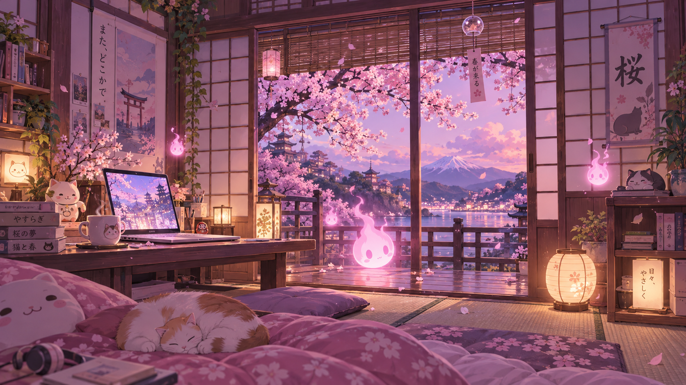

HITODAMA
人魂
さくら · Awake · Ctrl+Space
🌸 魂の宿るデスクトップ · A soul for your Windows
🌸 コントロール
🖼️ 壁紙
💬 音声・AI
✨ スロット
📝 目標
📊 状態
📶
接続中...
--
🌙
テーマ切替
確認中...
🔊
オーディオ
再生中
🌸
さくら壁紙
クリックで適用
🔉
70%
🌸 生成された壁紙コレクション (Arena AI)

さくらルーム (Sakura Lofi)
柔らかなピンクの光と桜舞う和室
壁紙に設定 🌸
桜庭園 (Sakura Garden)
満開の桜と鯉の池、木造の橋と淡い雲
壁紙に設定 🌸
ピンク東京 (Pastel Tokyo)
鳥居とネオンが煌めく桜の街並み
壁紙に設定 🌸
夜桜サイバー (Night Cyber)
ネオンパープルと深い夜の反射
壁紙に設定 🌙
🌸 送信
「いつでも話しかけてね。Ctrl + Space でいつでもお話しできます。」(´｡• ᵕ •｡`)
📋 カーソル位置に貼付
🗣️ 読み上げ
📄 コピー
LLM 接続設定 (Ollama / Gemini / Groq / OpenRouter)
API URL:
モデル:
APIキー:
✨ 魂の5つのスロット (Hitodama Soul Slots)
🌸
人魂 (Soul)
さくらの炎 (Sakura Flame)
アバター切替
🍡
性格 (Personality)
Sweet Sakura (甘えん坊)
Sweet Sakura 🌸
Tsundere 🎀
True Chad 🗿
Quiet Zen 🍵
🎀
音声 (Voice)
Kokoro / WebTTS (Sakura Soft)
Active
⚡
能力 (Abilities)
Windows自動化 · 壁紙 · 音量 · 対話
5 Enabled
💧
音声入力 (Dictation)
Liquid Drop (Ctrl+Space 長押し)
Active
🌸 本日のやることリスト (Daily Objectives)
0/0
＋ 追加
1.2%
CPU 使用率
45%
システム RAM
38 MB
人魂 メモリ (Heap)
-- GB
空き RAM
🌸 さくら壁紙を適用しました！